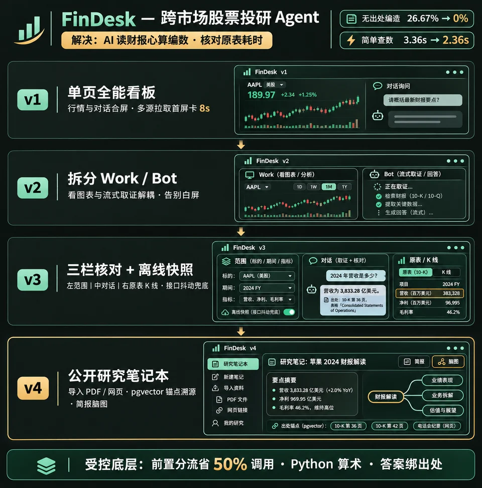

01 · 主项目 · AI AGENT / 跨市场金融投研
FinDesk — 跨市场股票投研 Agent 与研究笔记本
针对 AI 读财报「心算编数」、核对原表耗时的痛点，独立全栈落地「算术归代码、答案绑出处」系统，完成 v1 看板到 v4 研究笔记本四层演进。

核心结果
无出处编造数字 26.67% → 0%；前置分流拦截约 50% 简单查数，平均耗时 3.36s → 2.36s。
关键取舍
- 能力切分：简单查数走前置直通，算术交 Python，每个数字绑原表 ID 并缺数留白。
- 克制止损：2,000 条微调真实跨公司题不涨分即停训，严守研究辅助边界。